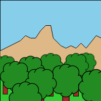
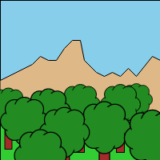

g2 is capable of reusing pre-existing g2-objects via use(), ins() or simply as predefined command queue.
usecommand for multiple reuse with idividual transform and stylinginsmethod/command for single (re)use of command groups
| Command | Comment |
|---|---|
use({grp}) |
Reference grp's commands while applying transformation and style property values which are additionaly provided to it. |
ins(fn) |
Invoke functions at 'define time' or objects at 'run time'. For more information how to use ins read here |
use #
use references the command queue of another g2 object. So any modifications of the commands of
that referenced external object are fully transparent and thus visible in all useing instances.
At rendering time the commands of the referenced g2 are executed each time ... not copied. Do not call
exe in referenced objects - the command queue will get executed from external.
The transformation and style state of the refering object is passed over to the referenced g2 object. Those style properties might get overwritten by the referenced object's own style values.
Example #
const smiley = g2().cir({x:0,y:0,r:5}) // set smiley origin in its center !
.arc({x:0,y:0,r:3,w:0.8,dw:2})
.beg({fs:"snow"}) // snow colored eyes.
.cir({x:-2,y:-1,r:1})
.cir({x:2,y:-1,r:1})
.end();
g2().use({grp:smiley,x:50,y:50,scl:4,lw:0.75,fs:"yellow"})
.use({grp:smiley,x:150,y:50,scl:5,lw:0.4,fs:"orange",ls:"green"})
.exe(ctx);
Building custom symbol libraries on top of g2 is as easy as reusing those library elements
via use command. There is also a g2.symbol namespace. Symbols added to it can be handed over
to use command by their name as in use({grp:"smiley"}).
So if you want to reuse geometry more than once, consider using use!
Example 2 #
function rollingWheel() {
const r=40,dphi=11/20*Math.PI,style={fs:"transparent",lw:8},
wheel = g2().cir({x:0,y:0,r:r,...style})
.lin({x1:-0.8*r,y1:0,x2:0.8*r,y2:0,...style})
.cir({x:0,y:0,r:4,fs:"snow",lw:2}),
rolling = g2();
for (let alpha=0.3,phi=0; alpha<=1; alpha+=0.1,phi+=dphi) {
rolling.use({grp:wheel,x:r*phi,y:54,w:phi,ls:'rgba(0,0,0,'+alpha*alpha*alpha+')'});
}
return rolling;
}
g2().grid()
.use({grp:rollingWheel()})
.exe(ctx);

The service function - here rollingWheel - simply has to return a previously filled g2 object
and use will put its contents in its own command queue.
But we can do even better than that. We slightly modify the previous example and hand over the main g2 object to the service function.
Example 2 Enhanced #
<canvas id="c" width="550" height="100"></canvas>
<script src='g2.core.js'></script>
<script>
const ctx=document.getElementById("c").getContext("2d");
function rollingWheel(g) {
let r=40,dphi=11/20*Math.PI,style={fs:"transparent",lw:8},
wheel = g2().cir({x:0,y:0,r:r,...style})
.lin({x1:-0.8*r,y1:0,x2:0.8*r,y2:0,...style})
.cir({x:0,y:0,r:4,fs:"snow",lw:2});
for (let alpha=0.3,phi=0; alpha<=1;alpha+=0.1,phi+=dphi)
g.use({grp:wheel,x:r*phi,y:54,w:phi,ls:'rgba(0,0,0,'+alpha*alpha*alpha+')'});
return g;
}
const g = g2();
g.grid()
.use({grp:rollingWheel(g)})
.exe(ctx);
</script>
Example 2 with ins #
...
g.grid()
.ins(rollingWheel(g))
.exe(ctx);
</script>
Example 3 #
Use is exceptionally useful if the same element is used over and over again
<canvas id="c1" width=200, height=200 style="border:1px solid black"></canvas>
<canvas id="c2" width=200, height=200 style="border:1px solid black"></canvas>
<script src="./g2.core.js"></script>
<script>
const pi = Math.PI,
ctx1 = document.getElementById('c1').getContext('2d'),
ctx2 = document.getElementById('c2').getContext('2d'),
world = g2().rec({x:0,y:0,b:200,h:200,fs:"skyblue"})
.ply({pts:[0,100,40,...],fs:"burlywood"})
.rec({x:0,y:0,b:200,y:150,fs:"limegreen"}),
tree = g2().rec({x:-5,y:0,b:10,h:40,fs:"brown"})
.beg({fs:"forestgreen"})
.cir({x:15,y:-20,r:10})
...
.cir({x:0,y:-20,r:20,ls:"transparent"})
.end();
g2().use({grp:world,x:0,y:0})
.use({grp:tree,x:100,y:150})
.exe(ctx1) //draw one tree
.use({grp:tree,x:170,y:140,scl:0.8})
.use({grp:tree,x:10,y:150,scl:0.9})
.use({grp:tree,x:150,y:150})
.use({grp:tree,x:60,y:160,scl:1.1})
.use({grp:tree,x:30,y:175,scl:1.2})
.use({grp:tree,x:130,y:185,scl:1.3})
.use({grp:tree,x:80,y:190,scl:1.25})
.use({grp:tree,x:190,y:200,scl:1.4})
.use({grp:tree,x:50,y:220,scl:1.3})
.exe(ctx2) // draw mighty forest
</script>
 

Since the main g2 object is returned, the use command recognizes that it has nothing
to do - especially no copying, which is very efficient.
So the use command allows easy integration of external functions into g2's method chain.
Predefined command queues #
Please note that predefined command queues can also be used without any manipulation of their styling, as shown in previous occasions.
const block = g2().rec({b:20,h:20,x:50,y:100,fs:"burlywood",ls:"saddlebrown"});
block.exe(ctx);